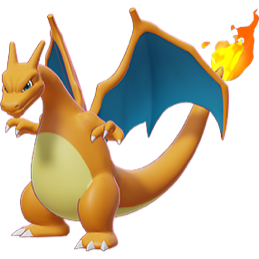
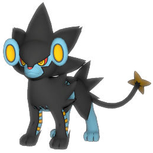
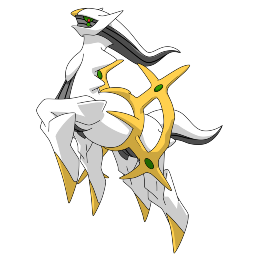

-
Pikachu
HP 300

Descrição
Os Pikachus são pequenos roedores de quarenta centímetros e de seis quilogramas, com um corpo redondo, pernas curtas e uma longa cauda, quando macho, a cauda tem um formato de um raio, mas se o Pikachu for fêmea sua cauda ganha um coração na ponta.
-
Charizard
HP 800
Descrição
Geralmente, um Charizard é competitivo. Ele adora a batalha e seu espírito competitivo também é notável, uma vez que nunca vai cuspir fogo em um inimigo mais fraco a menos que provocado ou ordenado. Quando fica muito irritado, as chamas em sua cauda se tornam branco-azuladas.
-
Luxray
HP 950
Descrição
Luxray pode ver através de objetos sólidos. Ele identificará instantaneamente a presa tentando se esconder atrás das paredes, mesmo que as paredes sejam grossas.
-
Mewtwo
HP 1200

Descrição
Mewtwo foi criado geneticamente em um laboratório, sendo um clone do misterioso antigo Pokémon Mew. É uma criatura com uma postura humanóide, mas tem algumas características felinas.
-
Arceus
HP ????
Descrição
Conhecido como The Original One, ele é o criador do universo Pokémon e venerado principalmente em Sinnoh e Ransei. Ele lidera o Creation trio, Lake guardians e possivelmente todos os lendários importantes para a natureza do mundo.